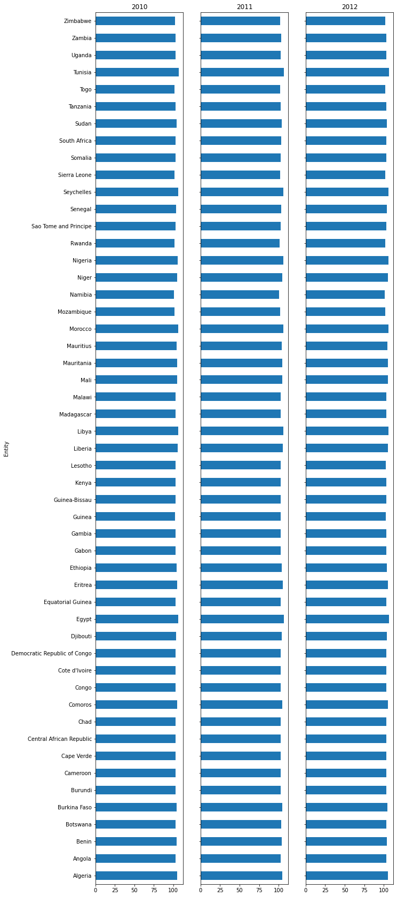
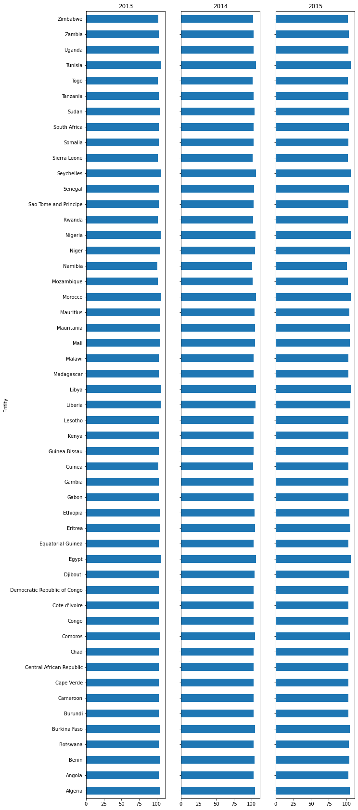
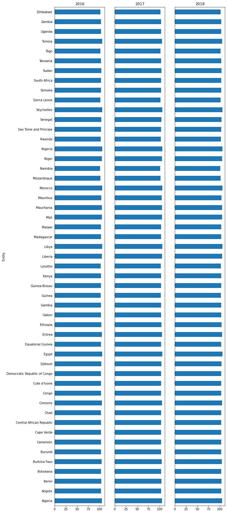

The sex ratio for the entire world population is approximately 101 males to 100 females (2021 est.).[8] Human sex ratios, either at birth or in the population as a whole, can be reported in any of four ways: the ratio of males to females, the ratio of females to males, the proportion of males, or the proportion of females. If there are 108,000 males and 100,000 females the ratio of males to females is 1.080 and the proportion of males is 51.9%. Scientific literature often uses the proportion of males. This article uses the ratio of males to females, unless specified otherwise. Wikipedia
THE BAR PLOTS DISPLAYS THE COMBINED STATISTICS OF THE FEMALE TO MALE BIRTH RATIO FROM 2010 TO 2019


